Texto 05 - Estrutura geológica e formas do relevo brasileiro
Conteúdo: Formação do espaço natural brasileiro; Estrutura geológica: Escudos cristalinos,
bacias sedimentares e Dobramentos antigos; principais formas do relevo do brasileiro.
Objetivo: Identificar as principais formações geológicas do Brasil e suas formas de relevo
predominantes.
Digite seu nome
Introdução
Na aula passada, vimos a relação entre a população e o espaço agrário
brasileiro. Todavia, a investigação geográfica, diferente de outras ciências sociais, incorpora os objetos
naturais como relevo, rios, clima, vegetação etc. para entender melhor o mundo em que vivemos.
Por isso vamos estudar na aula de hoje, o papel da estrutura geológica e as formas de relevo no território
brasileiro.
Ao final, você ficará familiarizado com a influências das rochas e do relevo na vida da população e de seu
território.
Questões para serem respondidas no caderno sobre o tema da aula de hoje:
1. Qual é o objetivo principal da aula de hoje?
2. Explique a importância da análise e síntese na investigação geográfica.
3. O que constitui o espaço geográfico e como ele é formado?
4. Qual é a importância de conhecer a estrutura geológica para entender o funcionamento do planeta?
5. O que é a estrutura geológica e como ela influencia as formas de relevo?
6. Descreva o papel das rochas na formação das paisagens geográficas.
7. O que são dobramentos antigos e como eles se relacionam com o relevo brasileiro?
8. Explique as características das bacias sedimentares e sua importância para o Brasil.
9. Quais são os principais tipos de relevo presentes no Brasil? Dê exemplos de cada um.
10. Onde estão localizados os principais escudos cristalinos e bacias sedimentares no Brasil?
O espaço geográfico: entre análise e síntese
Desde a formação do Brasil e a consolidação do seu território, seu povoamento e a repartição de suas terras,
estamos vendo alguns aspectos da realidade. Porém, todos esses acontecimentos, esses eventos ocorrem de
forma simultânea, uns mais rápidos, outros mais lentos.
Na Ciência, temos que fazer uma divisão (análise) dos temas para depois realizar uma junção de tudo
(síntese).
O espaço geográfico é um só, ele é composto por objetos naturais e sociais, mas é, grosso modo, formado por
várias camadas. A estrutura geológica e as formas de relevo constituem mais uma dessas camadas. Elas
pertencem a geografia física, assim como o clima, a vegetação, a hidrografia, dentre outras.
Esses elementos combinam-se e, devido a extensão do território brasileiro, acabam por constituir diferentes
paisagens naturais.
Nessas paisagens o clima e o solo influenciam a vegetação, que por sua vez é influenciado pelo relevo e o
solo depende da estrutura geológica que serve de base para o nosso espaço habitado.
A estrutura geológica
Vamos retomar brevemente a dinâmica das rochas e do relevo.
Conhecer as dinâmicas das rochas é fundamental para o entendimento do funcionamento do Planeta em que
vivemos. Podemos encontrar diversos minerais e combustíveis, além de evitar problemas ambientais.
Há rochas que surgem das profundezas do magma e outras que são formadas por sedimentos acumulados por milhões
de anos. Ambas podem voltar para o manto e se transformarem em rochas metamórficas com características
novas.
A estrutura geológica corresponde aos grandes corpos rochosos que sustentam as formas de relevo. Trata-se da
disposição de rochas em camadas de diversos tipos e idades diferentes.
Veja a foto abaixo de um famoso ponto turístico na cidade de Salvador, Bahia. O Elevador Lacerda inaugurado
em 1873.
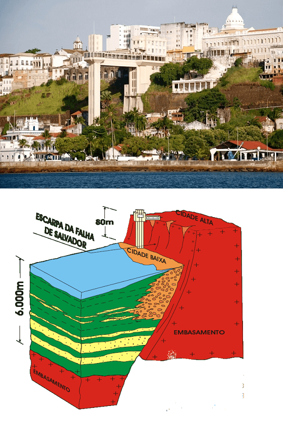
Cidade Alta e Cidade Baixa de Salvador, Bahia.
Fonte: https://oprofessorweb.wordpress.com
/2015/03/27/entre-as-cidades-baixa-e-alta/.
Essa paisagem foi resultado de uma falha geológica, isto é, geralmente exercida por pressão de movimentos de
placas tectônicas, pelo acúmulo e liberação de energia ocorrem verdadeiras fraturas nas rochas que a
compõem.
Essas rochas, por sua vez, sustentam as formas do relevo da paisagem, nesse caso a existência de uma cidade
alta e outra cidade baixa.
Para encontrar o relevo basta observar as formas da superfície terrestre, áreas mais altas, montanhas,
planaltos, áreas mais baixas, planícies e depressões, paredões rochosos no mar, falésias, colinas, golfo,
cabos, ilhas, dentre inúmeros outras configurações da crosta terrestre.
Qual a importância do relevo?
O releve é muito importante para a construção de moradias fora de área de riscos, manejo de culturas
agrícolas, determinar o local adequado para o turismo, implantação de grandes obras de engenharia como
túneis, pontes, portos, hidrelétricas etc.
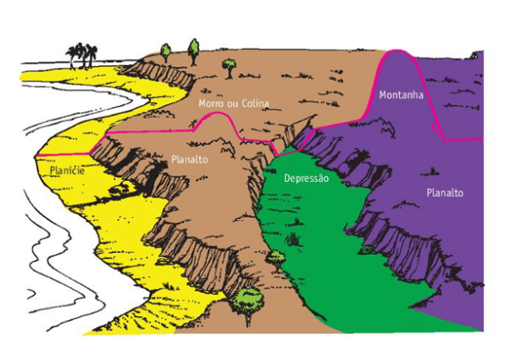
Fonte: Florenzano (2008).
Veja na imagem acima as cores representando algumas formas de relevo: planície, planaltos, depressão e relevo
de Montanha.
E se no mapa do Brasil pudéssemos visualizar onde estão localizados essas formas de relevo?
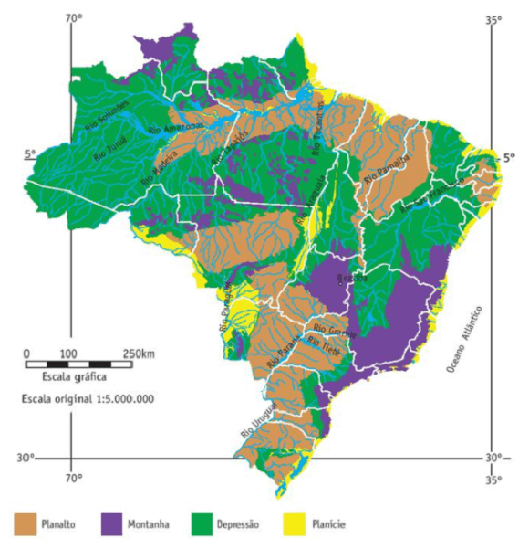
Fonte: Florenzano (2008).
O que podemos observar no mapa de relevo do Brasil? Primeiramente, podemos observar uma grande área de
depressão (área em verde), isto é, relevo rebaixado em relação as áreas em volta devido ao processo intenso
de erosão. Logo depois, temos uma grande porção de planaltos (área marrom) ao Norte e Centro-Sul do país.
Temos outro relevo montanhoso (área em azul) e poucas áreas de planície (área em amarelo) no litoral,
pantanal e alguns trechos na área central do Brasil.
Quer dizer que no Brasil tem montanhas? Tecnicamente não. No senso comum, o fato de existir uma área na
paisagem muito alto já é o suficiente para classifica-la como montanha. Porém, na Geologia não funciona
assim. As montanhas são formadas por processo tectônicos, dobramentos modernos como o Himalaia, resultado de
choques entre placas tectônicas e também pelo acúmulo de material vulcânico. O Brasil não possui dobramentos
modernos, mas sim possuía montanhas à época da Pangeia (180 milhões de anos), quando os continentes estavam
todos reunidos, mas elas foram muito desgastadas pela ação do tempo com a erosão. Portanto, o Brasil não
possui montanhas no sentido específico formada pelos dobramentos modernos, mas sim resquícios de montanhas
esculpidas pela erosão há milhares de anos.
Os componentes da estrutura geológica
De modo geral, as estruturas geológicos, ou seja, o modo de distribuição das rochas na superfície terrestre
surgem a partir de três tipos principais no globo terrestre.
1) A primeira estrutura são chamados de escudos cristalinos ou crátons.
São porções da crosta terrestre
muito antigas e resistentes compostas por rochas magmáticas e metamórficas (ver aula sobre ciclo das
rochas do 1º ano). Os escudos são formações bem antigas das eras Pré-Cambriana e Paleozoica e originam
baixos planaltos ou mesmo depressões, já que foram bastante desgastados pelos processos de intemperismo
e erosão;
2) As bacias sedimentares. Essas são formadas por rochas resultantes do acúmulo de
sedimentos e detritos
ao longo de milhões de anos e distribuídas em camadas na superfícies terrestre. Elas associadas à
planícies, planaltos sedimentares ou mesmo depressões;
3) Os dobramentos modernos. Esse tipo de estrutura geológica surgiu a partir dos
grandes dobramentos,
isto é, grandes elevações do terreno em consequência de pressões vinda do interior da Terra. Nas eras
Mesozoica até a Cenozoica formaram as grandes cadeias de montanhas existente no Planeta, como o
Himalaia, os Alpes, os Andes, dentre outras.
Como está distribuído essa estrutura geológica no Brasil?
O Brasil está inserido na Placa Sul-Americana, uma das inúmeras placas tectônicas que formam a superfície
terrestre e estão em movimento.
Nesse sentido, o Brasil está situado no interior da placa, onde a espessura é de aproximadamente de 200
quilômetros, por isso o nosso país é pouco afetado por terremotos e vulcões. Caso estivesse localizado nas
bordas das placas, como o Japão, as chances de sofrer com abalos sísmicos e erupções vulcânicas seriam
extremamente altas.
Assim, podemos entender melhor porque o Brasil não tem montanhas. O Chile, por exemplo, está localizado na
borda das Placas tectônicas, por isso está inserido na Cordilheira dos Andes, veja no mapa:
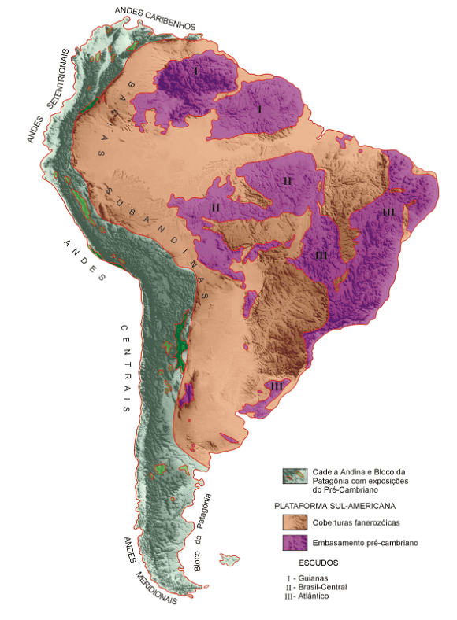
Escudos e principais bacias sedimentares do Brasil.
Fonte: Florenzano (2008, p. 133).Adaptado.
Através do mapa, vemos que o Brasil possui Escudos como o da Guiana (I), Brasil-Central (II) e Atlântico
(III) o restante são as bacias sedimentares.
Nos escudos predominam as rochas de alto grau metamórfico e granítico, como o Pão-de-Açúcar no Rio de
Janeiro. Os grandes escudos são separados por bacias sedimentares, quer dizer, rochas que sofreram processo
de erosão e se acumularam nas partes mais baixas do terreno originando as formas do relevo mais recentes.
Eventos geológicos no Brasil
Vale lembrar os acontecimentos geológicos que ocorreram no Brasil.
Na era Pré-Cambriana e Arqueozoica e Proterozoica ocorreram a formação dos escudos cristalinos, junto com o
acúmulo de jazidas minerais metálicas. Foi nesse período que se formou a Serra do Mar e da Mantiqueira.
Na era Paleozoica formaram-se as bacias sedimentares antigas e as bacias carboníferas do sul do país.
Na era Mesozoica ocorreram os derrames de rochas basálticas na Região Sul, a formação do petróleo e das
bacias sedimentares mais atuais.
E na última era, a Cenozoica, as bacias sedimentares do Pantanal, da Amazônia e planícies costeiras. Além
das ilhas vulcânicas como do Arquipélago de Fernando de Noronha, Ilha Trindade, dentre outras.
...mais sobre a estrutura geológica do Brasil
Desde a separação dos continentes da Pangeia há mais de 65 milhões de anos, o Brasil sofreu impacto dessa
separação entre África e América, formação das cordilheiras e do atual contorno do continente americano.
Um deles diz respeito ao vulcanismo. Os grandes derrames de lava em Poços de Caldas e Araxá (MG), São
Sebastião (SP), Itatiaia e Cabo Frio (RJ) e Lajes (SC). No Sul (SP até RG) grande derrame basáltico na bacia
do Paraná (origem dos solos Terra-Roxa), Bacia Amazônica e Parnaíba).
O que acontece se sobrepormos a estrutura geológica com seus escudos cristalinos e bacias sedimentares com
as variações de altitude do relevo?
Observe o mapa abaixo:
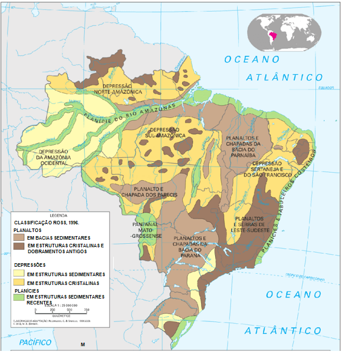
Ele ilustra a relação entre as rochas que servem de base para as variações do terreno que temos na
superfície.
É possível também descobrimos os locais ou onde estão as rochas magmáticas e metamórficas com reservas
minerais e onde estão as bacias sedimentares com petróleo, por exemplo.
Os escudos cristalinos e dobramentos antigos
Os Dobramentos antigos correspondem à Serra do Mar e Mantiqueira ainda na Era Arqueozoica. Já a Serra do
Espinhaço (BA e MG) foram formados na Era Proterozóica, porém são profundamente desgastadas pela erosão.
Em relação ao percentual, as áreas cratônicas que abrigam jazidas de minerais metálicos, como ferro, manganês
e cobre, por exemplo constituem 36% do território. Destes, 32% são da Era Arqueozoica, os mais antigos, com
rochas magmáticas intrusivas (granito) e metamórfica (gnaisse). O complexo cristalino. Os outros 4%, da Era
Proterozóica, predominavam rochas metamórficas. Nessas últimas estão localizadas as jazidas de minérios,
como: Quadrilátero de Ferro (MG), Serra dos Carajás (PA) e Maciço do Urucum (MS); Manganês da Serra do Navio
(AP) e Cassiterita de (RO).
O Escudo cristalino divide-se em: Escudo das Guianas, situado ao norte e o Escudo Brasileiro, porção central,
leste e sul do país.
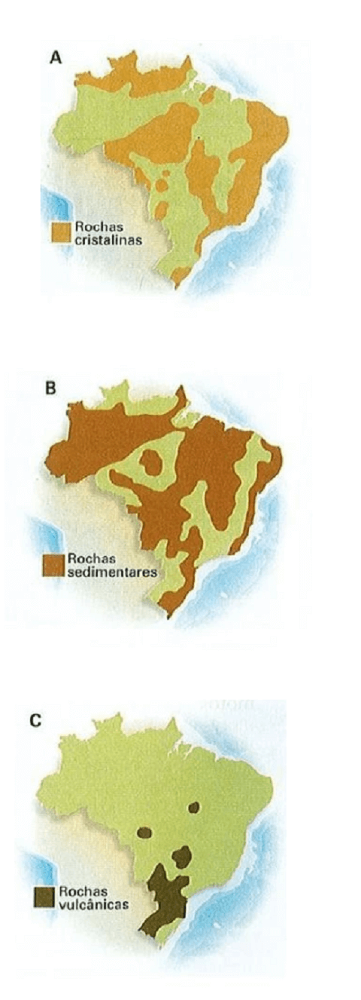
Bacias sedimentares
Em relação as bacias sedimentares, essas cobrem uma área maior: 64% da área total. Localizadas nas Bacias
Amazônica, do Meio-Norte, Paranaica, São Franciscana e do Pantanal e pequenas bacias (do Recôncavo baiano,
de SP e Curitiba).
As bacias sedimentares são muito importantes para a obtenção de recursos minerais, como o petróleo e carvão
mineral. O petróleo localiza-se nas sedimentares continentais (recôncavo baiano), marítimas, bacia de Campos
– RJ.
Já o carvão mineral formou-se mais intensamente na Bacia Paranaica, SC (Vale do rio Tubarão) e RS Vale do
Rio Jacuí.
O carvão brasileiro é considerado de má qualidade devido ao seu baixo teor calorífero, além de sua
distribuição descontínua pelas bacias. Além desses elementos, há possibilidades de encontrar minerais
radioativos como urânio e tório, além de xisto betuminoso na formação Irati do Paraná e Rio Grande do Sul e
materiais para construção como areia, cascalho e calcário.
O relevo brasileiro
O Brasil é um país de altitude média relativamente baixa, contando com cerca de 45% de todo o território
nacional abaixo dos 200 m de altitude. Os pontos mais elevados do relevo brasileiro são o Pico da Neblina,
com 2993 metros de altitude, e o Pico 31 de Março, com 2972 metros de altitude.
A altitude média do território brasileiro se deve ao país estar localizado sobre uma grande placa tectônica
livre da possibilidade de se chocar com outras placas, o que torna o Brasil um país imune a sofrer
terremotos.
Podemos dizer em resumo do relevo brasileiro, que ele se dá em:
• Planaltos: Áreas com elevação e aplanadas, caracterizadas por declives onde o processo de desgaste
erodido é maior do que o acúmulo sedimentar.
• Planícies: áreas moderadamente planas, nas quais o processo de depósito de sedimentos é maior que o de
desgaste.
• Depressão Relativa: áreas situadas acima do nível do mar, mas abaixo de regiões que lhe são próximas.
Além disso, temos inúmeros outros tipos de relevo, veja:
Formas de relevo
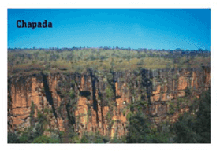
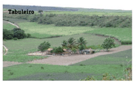
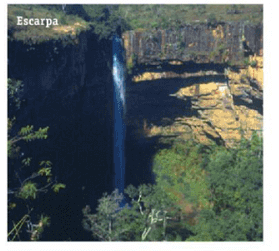
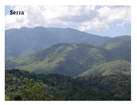
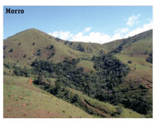
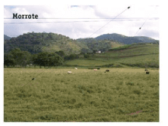
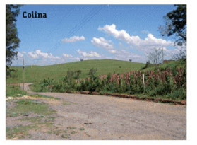
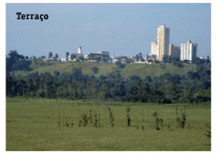
Chapadas, planalto com altitude com mais de 500 metros. Famosos: Chapada Diamantina (sul da Bahia) Chapada
dos Guimarães (MT) e Veadeiros (GO).
Pediplano: é o processo que leva, em regiões de clima árido a semiárido, ao desenvolvimento de áreas
aplainadas
Inselberg: relevos residuais que se acumulam em uma superfície, formando um tipo de monte ou elevação, que
pode se apresentar de formas variadas.
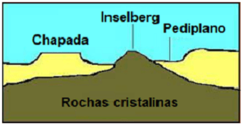
Na próxima aula vamos ver com detalhes as classificações do relevo brasileiro e a morfologia de seu litoral.
Teste seu conhecimento
As altitudes do território brasileiro são modestas. 40% do território tem no máximo 200m de altitude, isso
ocorre:
Teste seu conhecimento
No território brasileiro não há cadeias montanhas devido:
Teste seu conhecimento
As jazidas de minerais metálicos são encontradas, preferencialmente, no(a)s;
Não existe pergunta boba! A Ciência é feita de perguntas!
P:
Quais as características da estrutura geológica do Brasil?
R: O território brasileiro é formado por estruturas geológicas antigas.
Trata-se de um conjunto de rochas que servem de alicerce para o território. Suas idades geológicas vão desde
Paleozoico ao Mesozoico em relação as bacias sedimentares e do Pré-Cambriano (Arqueozoico-Proterozóico) para
os terrenos cristalinos.
Já o relevo brasileiro é um pouco mais recente (isso considerando milhões de anos). Isso quer dizer que o
relevo continua sendo desgastado pelos agentes de erosão e ele tem relação com as rochas antigas e com as
transformações que ocorram a partir do Mesozoico, como a criação das cordilheiras andinas e da própria
abertura do continente Atlântico na época da separação da Pangeia.
Portanto, a estrutura geológica do Brasil é marcada pelos crátons, pelos dobramentos antigos e pelas grandes
bacias sedimentares.
P:Qual a diferença entre Crátons e Escudos
cristalinos?
R: A diferença é que os Escudos cristalinos estão expostos a processos
erosivos. Já as áreas cratônicas estão subjacente (por baixo) de bacias sedimentares, por exemplo. Vamos
fazer uma analogia com uma cama. O colchão são as rochas magmática ou metamórficas (Crátons). O forro de
cama, aquele com elástico seria a bacia sedimentar. As vezes o colchão fica exposto e pode sofrer ação do
tempo, este seria o escudo cristalino. Veja na imagem abaixo um exemplo na bacia do Amazonas:
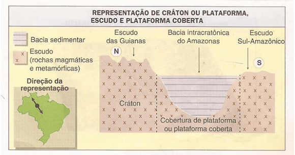
Os crátons e as plataformas (crátons recobertos por bacias sedimentares) formam a base sobre a qual se
assenta o território brasileiro.
Há três importantes formações de crátons na porção continental do Brasil:
- província da Guiana Meridional, situada no extremo norte, abrangendo os Estados do
Amazonas, Roraima e Amapá, possui altitudes elevadas;
- Xingu, localizada na porção sul das terras amazônicas, nos Estados de Rondônia, Mato
Grosso, Pará e sul do Amazonas, apresentam altitudes medianas;
- crátons de São Francisco Minas Gerais e Bahia.
Os escudos cristalinos foram formados há mais de 2 bilhões de anos no Pré-Cambriano, estiveram sujeitos a
dobramentos, são eles: os cinturões do Atlântico que se estendem desde a parte leste do Nordeste até o
sudeste do Rio Grande do Sul; a porção de Brasília, com áreas ao sul de Tocantins até o sudeste de Minas
Gerais e o cinturão orogênico do Paraguai-Araguaia, que ocupa terras de Goiás, Tocantins e Mato Grosso, este
o mais erodido.
Os escudos cristalinos são áreas de exploração de minérios e corresponde a 36% do território nacional.
P:
Qual a importância das bacias sedimentares?
R:
As bacias sedimentares corresponde a 64% do território brasileiro e são basicamente três: a bacia Amazônica,
com petróleo e gás natural de difícil acesso devido a longa compactação de suas camadas; a bacia do
Parnaíba, com importantes reservas de água subterrânea e carvão mineral; e a bacia do Paraná com exposição
de enormes derrames de lava vulcânica que deram origem a solos extremamente férteis chamados de terra roxa.
As bacias sedimentares foram formadas há mais de 500 milhões de anos a partir de sedimentos e fósseis. Muitos
fósseis são de peixes e conchas marinhos, pois durante a era Paleozoica, extensas áreas do território da
América do Sul estavam submersas por águas, fenômeno conhecido como “mar Devoniano”.
Nas áreas de bacias sedimentares devido a decomposição incompleta de seres vivos, animais e vegetais, e após
milhões de anos recobertos por sedimentos, há grande possibilidade de se encontrar petróleo, gás natural ou
carvão mineral, uma das razões para o seu estudo.
Desafio - Jornada do herói: A Recusa do Chamado
Na aula passada vimos como ocorre “O chamado à Aventura” para o desenvolvimento da nossa história do
jogo com temas ligados ao Brasil. Algum conflito provoca uma reação em cadeia que levará o herói até o
seu objetivo. Neste desafio vamos ver a Recusa do Chamado, ou seja, as dificuldades em aceitar o que
está por vir. Como sempre, formem seus grupos e use a criatividade para lidar com esse desafio.
Instruções
Forme um grupo com 5-6 estudantes;
Leia o texto abaixo e discuta com seu grupo o conteúdo das questões;
Faça anotações em seu caderno;
Seja criativo, use os conhecimentos que você já possui sobre o Desafio.
Tempo da atividade: 25 minutos.
A Recusa do Chamado (3)
Leia a passagem abaixo:
“Junte o que é seu, meu camarada. Pense no que vai precisar para enfrentar possíveis perigos, reflita
sobre desastres já acontecidos. O espectro do desconhecido sempre caminha conosco, detendo nosso
progresso neste limiar. Alguns de nós abandonam a busca, outros hesitam, outros ouvem as ponderações
das famílias que temem por nossas vidas e não querem que partamos. A gente ouve dizer que a jornada
já começa errada, não vai dar certo, está fadada ao fracasso. Dá para sentir o medo que nos sufoca o
fôlego e nos acelera os corações. Será que não é melhor ficar em casa, com Nossa Tribo, e deixar que
os outros arrisquem o pescoço nessa busca? Será que você nasceu mesmo para isso e pode sair em busca
de aventuras?”
A passagem acima ilustra A Recusa ao Chamado, que é o momento em que o herói diz que o Chamado não é seu
problema ou que nada pode ser feito, e o melhor seria deixar as coisas como estão. Pode ser o momento em
que um mentor entra em cena para tentar convencê-lo a se comprometer na resolução do conflito.
Quando Obi-Wan Kenobi, em Star Wars, pede à ajuda de Luke Skywalker para ir até Alderaan, ele
primeiro nega o pedido, até que seus tios são assinados pelo Império. Após esse fato, ele decide ajudar
a resgatar a princesa Leia.
Em O Senhor dos Anéis, Após Gandalf revelar à Frodo que o anel dado a ele pelo seu tio Bilbo
deve ser destruído para derrotar Sauron, Frodo está indeciso e recusa inicialmente o chamado. Ele
argumenta que nunca esteve em uma aventura antes, e deseja aproveitar o verão no Condado. Ele se sentiu
fraco ou não à altura da tarefa. Entretanto, Com a figura do mentor Gandolf, também como um protetor do
Condado, Frodo ganha confiança e decide partir para sua missão.
Como que a descrição do relevo e das rochas podem contribuir ilustrar o cenário de um jogo?
O ambiente pode ser uma pedreira de minério de ferro ou o solo do sertão nordestino. Ou uma mina de
carvão em Santa Catarina ou a paisagem natural do Rio de Janeiro. A planície do rio amazonas ou do
Pantanal. A caracterização do cenário passa, portanto, pela observação e descrição geográfica e é muito
importante para relevar o caminho no qual o herói irá trilhar para atingir seus objetivos.
Em nossa história, de que os personagens têm medo? São medos falsos ou verdadeiros? Como eles se
expressam?
De que modo eles recusam o Chamado à Aventura? Quais as consequências desse ato na realidade?
Você já recusou Chamados à Aventura? Em que sua vida seria diferente, se os tivesse aceitado?
Você já aceitou Chamados à Aventura que preferia ter recusado?
Todas essas questões estão envolvidas na desenvolvimento da história de um jogo. O herói quer evitar o
chamado e pode dar uma lista interminável de desculpas ou compromissos inadiáveis.
O herói também pode ter chamados conflitantes, dois ou mais chamados ao mesmo tempo e, portanto, fica
mais difícil decidirpanedesafio
qual ele deve aceitar. As vezes o herói deve recusar uma chamado, pois trata-se de algo negativo, quando
é algo ilegal, uma sedução ou tentação inoportuna.
Quando os herói entende o medo e engaja-se na aventura, ele pode receber a ajuda de mentores, colegas,
grupos, instituições, isto é, ele não estará sozinho dependendo das escolhas que fez e por quais
caminhos decidiu seguir.
×
0%
Para saber mais:
Referências bibliográficas
FLORENZANO, Teresa Gallotti. Geomorfologia: conceitos e tecnologias atuais. São Paulo:
Oficina de Textos, 2008.
ROSS, Jurandyr. L. S. Compartimentação do relevo da América do Sul. Revista Brasileira de
Geografia
1, p.21-58, 2016.
VESENTINI, José William. Geografia: o mundo em transição. Ensino médio. 2. ed. – São
Paulo: Ática, 2013.
VOGLER, Christopher. A jornada do escritor: estruturas míticas para escritores. Tradução de
Ana Maria Machado. -
2.ed. Rio de Janeiro: Nova Fronteira, 2006.
SKOLNICK, Evan. Video game storytelling: what every developer needs to know about narrative
techniques.